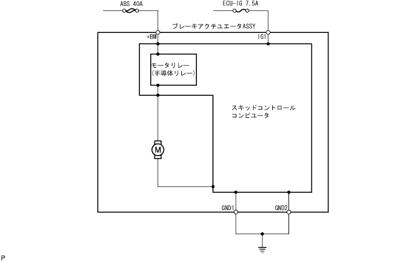

DTC C1251/51 motor -based abnormality
printing
Circuit explanation
Dtcno.
DTC detection conditions
DTC output -related items
C1251/51
The pump motor when the initial check is not rotating normally
Brake actuator ASSY abnormality
Brake actuator in the motor circuit disconnection
Circuit diagram

Inspection procedure
Step 1
Brake actuator ASSY replacement
GO
completion